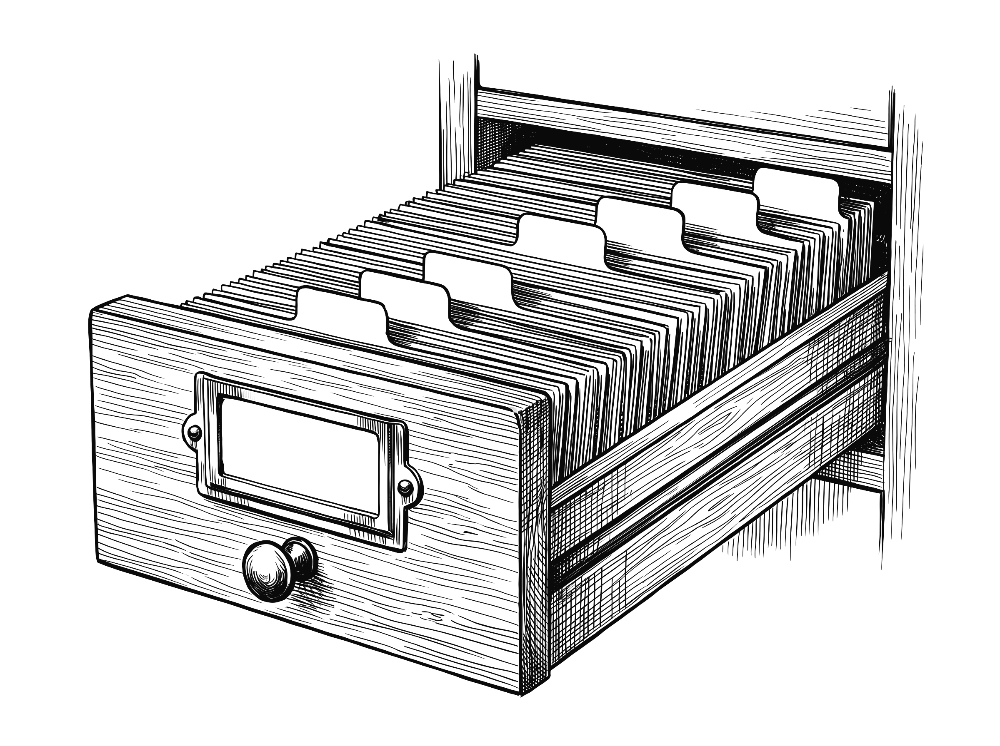
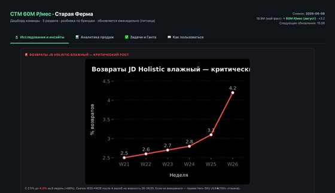
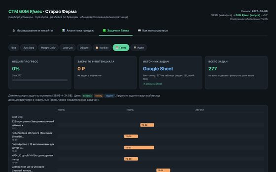
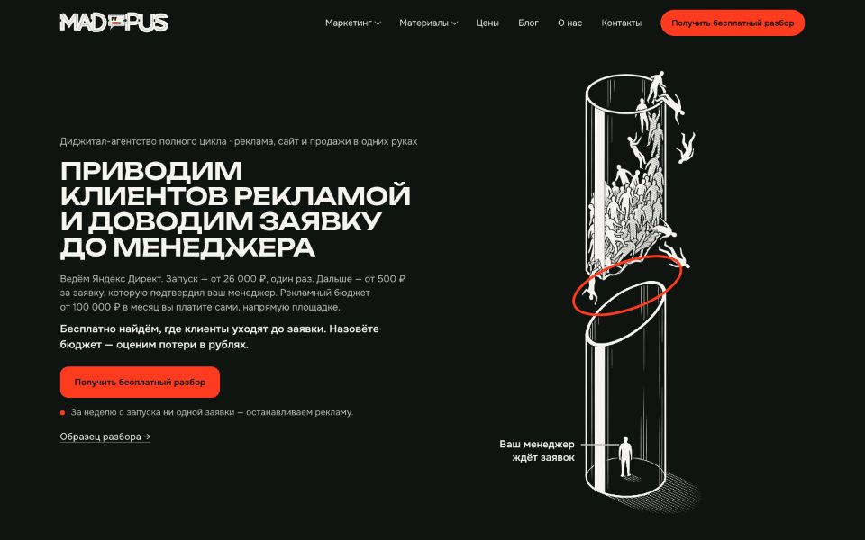
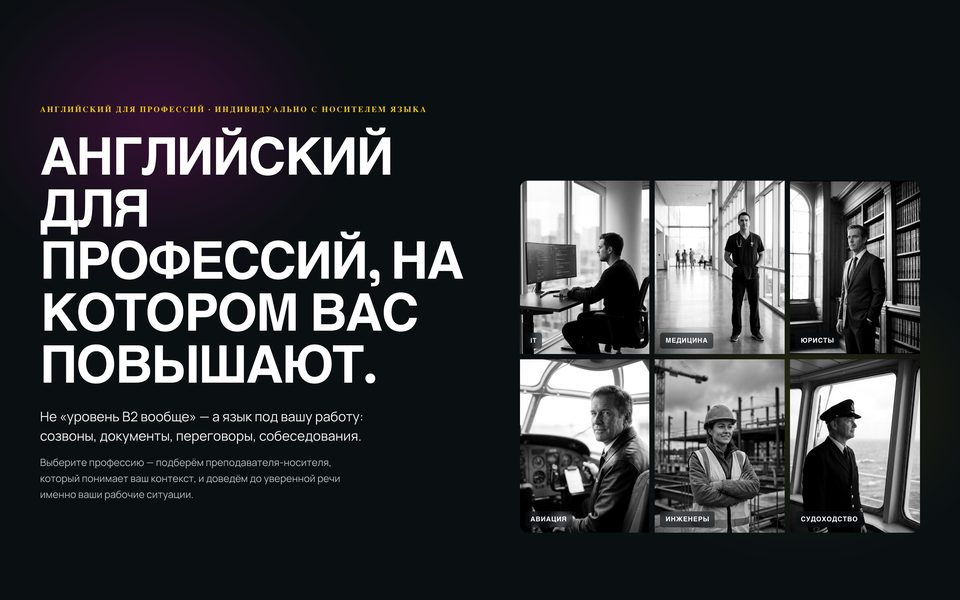
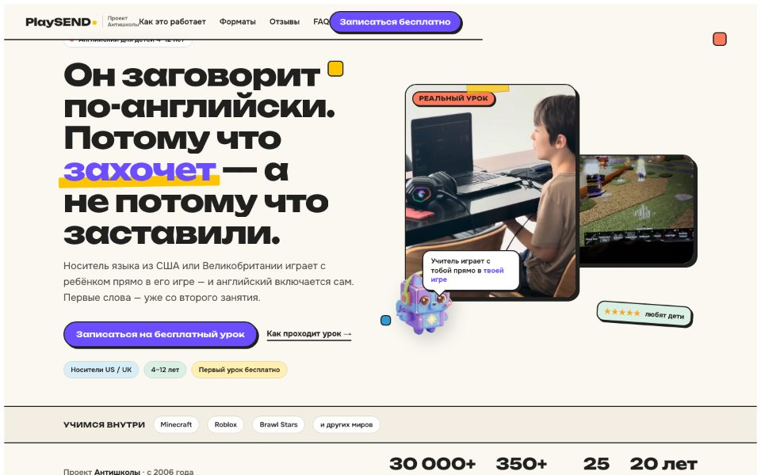

Open to roles: Marketing Director · Commercial Director · Head of E-commerce & Marketplaces
Maksim Pugachev
Marketing DirectorE-commerce & Marketplaces
Led a team of 90+ people, 35 of them direct reports — fully remote for 3.5 years
Remote or full-time in the office · open to relocation
18 years in sales and marketing, 13 in leadership roles · marketing budgets of up to RUB 200m a year
- 25–30% → 8–17%
- ad cost ratio (ACoS) of the website’s paid channels: cut after I brought advertising in-house; 30% less budget for the same number of orders
- 15–20% → 30–35%
- share of repeat purchases on the website; CRM messages (email, push, SMS) went from 8% to 15% of website revenue
- ×2.9
- revenue growth of our own brands (private label) across all channels in 2025. Their gross margin on marketplaces rose from 43% in 2023 to 61% in 2025
- ≈0 → 40–50%
- marketplaces’ share of company turnover. I built the marketplace team
Message me on Telegramor LinkedIn, or email maksim.pugachev69@gmail.com
Every week the owner got one summary: sales, the market and the tasks of every department. AI compiled it; I prepared the decisions.
before · after
×2
e-commerce revenue in 11 months
- 13
- people on the team, every one my hire
- 4 countries
- wholesale from zero

Ads 30% cheaper for the same orders, repeat purchases almost doubled
When I joined, the website hadn’t changed in 10 years. Marketplace sales were close to zero.
before · after
Advertising
I brought advertising, SEO and social media in-house: our own team sees stock and profit, a contractor sees only clicks. I put money only behind products that were in stock and carried a high margin.
The owner set the goal; I built the budget to reach it. Every channel had an ACoS or cost-per-order threshold: miss it and it was switched off. That is how I dropped the agency running our paid search: its ACoS was 25%, our first in-house campaigns delivered 20%.
The website’s paid-channel ACoS also fell because the average order grew one and a half times. The new ACoS includes my team’s salaries; the old one, the contractors’ fees.
25–30%8–17%- 4–6% of turnover
- spent on all marketing. The owner had allocated 8%
- up to RUB 19
- of website revenue per RUB 1 of ad spend, organic included
Repeat purchases and CRM
The cheapest order comes from someone who has already bought. So I expanded email campaigns, moved abandoned-cart emails to Flocktory and launched segmented calls to the customer base. I grew the blog so that customers kept coming back to us between orders.
Repeat purchases on the website
15–20%30–35%A bag of pet food lasts 25–35 days. Customers used to buy 2–2.5 bags in a row, month after month. On my watch — 3.5–4.
bags in a row, month after month · diagram Website
Guided by CJM and customer surveys, I reworked the buyer’s path and removed whatever stood between the visitor and the cart. I made the call to move the site to a new framework and led the project: we shipped the header, the product page and the checkout; the other sections were still in progress.
Add to cart
before
7–8%
after
14–15%
The average order grew from RUB 5–6k to 8–9k. The website and the call centre held 230–300 orders a day, even when stock ran short and our prices were above the market.
Content
I wrote one product-card standard for a team of 4: descriptions, infographics, rich content.
Complete product cards a day
1040–50After A/B tests of marketplace content, shoppers added products to the cart from the product page twice as often.
Private label
The market in 2023–2026: some brands left Russia, EU imports were disrupted, and of our 15 exclusive brands only one remained. So I created 4 brands of our own, from research and naming to packaging and launch. Just Dog became the top seller. The brands’ revenue grew both on the website and on marketplaces. We promoted them through bloggers, and within 1.5 years people were searching for them on Yandex by name.
Private-label share of company turnover
- 12–18%
- of company turnover — 4 brands of our own
Marketplaces
I built the team and grew sales from almost zero: 6 marketplaces, over 6,000 product cards on each. A unit-economics calculator and a repricer held the price: after commissions and promotions, no product sold below cost.
Marketplaces’ share of company turnover
diagram≈ 040–50%123- team launch
- 6 marketplaces
- private label on marketplaces
What each channel delivered
Advertising
- ≈ RUB 1,500 → 900–1,200
- cost per order from ads
CRM & email
- ×5
- revenue from abandoned-cart emails
Blog
- 0 → 350k
- visitors a month
Yandex Products
I connected instalment payments and agreed that Yandex would pay for the discount shown in search results: shoppers saw a lower price, and the store paid nothing for the discount.
- +30%
- sales from Yandex Products in the 2–3 months after launch
Bloggers
- 20+
- placements a month on Instagram, VK, Dzen, YouTube and TikTok
- 0 → 6–7k
- Yandex searches for our brands a month
Marketplaces
- 1.5–3%
- of marketplace sales went on in-platform ads
- 500–750
- orders a day by 2026
Call centre
- 15–20% → ≈30%
- of website orders were placed through the call centre: inbound calls and segmented calls to the customer base
- 7 in 100
- bought after a call to a semi-cold list
I was also responsible for special projects and events, trade marketing with suppliers, PR and outdoor advertising. Some of it I ran myself. The rest the team delivered: I signed off its projects and often ran the numbers myself.
How I led 90+ people remotely
Second-in-command to the owner: I ran the weekly coordination of 14 departments, from marketing and sales to purchasing, the warehouse and IT.
I set the plans myself: departments usually met them at 95–105%, and the best ones beat them by 10–15%. In the commercial departments I tied pay to plan: the variable share grew from 25% to 60%. I hired 10–15 people; three of them became managers.
Of my 35 direct reports, no one left of their own accord in 3.5 years; I replaced three.
- Marketing16
- Marketplaces5
- Website & call centrea head and 10 managers
- Development8
- Private label4
- Retaila head and 6 stores
- Purchasing & logisticsdotted line
Management rhythm
- Tasks in a task tracker
- Daily stand-ups
- Three plan-and-results meetings a week
- A summary with numbers for every department
Weekly table
Example: the structure is real, the numbers are illustrative
I choose the metrics for each business and each department — your company will need its own set. But every business needs the core: plan vs actual, the funnel, stock, service and cash.
Company focus for the week
- Stock
- Prices
- Traffic
- Service
Rule: one action that is sure to deliver a result — for every department. Each task states the result in numbers and what it is for.
Departments
below planon planabove plan↑ leading indicator
Figures are illustrative
Marketplaces
| Metric | Plan this week | Actual | % of plan | Plan next week | Forecast | Status |
|---|---|---|---|---|---|---|
| Marketplace orders this weekHow many orders came from the marketplaces this week: are we on track for the monthly plan | 4,800 | 4,950 | 103% | 4,944 | 4,802 | on plan |
| Order cancellationsHow many orders were cancelled: if cancellations rise, we check stock and picking times | 100 | 96 | 104% | 103 | 94 | on plan |
| Marketplace margin, %What we earn on the marketplaces: tells us where to raise prices | 27% | 28.4% | 105% | 27.81% | 28.34% | on plan |
| Receivables, % of turnoverHow much the marketplaces still owe us: we watch that the debt does not grow | 10% | 9.5% | 105% | 10% | 9.61% | on plan |
| Buyout rate, %How many orders customers actually collected: shows losses after checkout | 92% | 93% | 101% | 94.76% | 95.42% | on plan |
| In-platform ACoS, %How much of revenue goes on marketplace ads: tells us where to lower bids | 2.5% | 2.4% | 104% | 2.5% | 2.5% | on plan |
| SKUs out of stock on the marketplace↑ leadingHow many products are not selling because stock is at zero: each one is lost revenue | 20 | 17 | 118% | 21 | 16 | above plan |
| Top cards on the first search positions, share↑ leadingShare of top products in the first search positions: a slip shows before sales fall | 60% | 58% | 97% | 61.8% | 57.07% | on plan |
Marketplace discount (SPP) by day
| Mon | Tue | Wed | Thu | Fri | Sat | Sun | |
|---|---|---|---|---|---|---|---|
| WB | 30% | 31% | 32% | 32% | 31% | 30% | 29% |
| OZ | 36% | 36% | 36% | 35% | 37% | 36% | 36% |
Obstacles
A top item is out of stock
Needed from other departments
A decision on shipping to the FBO warehouse
Warehouse
| Metric | Plan this week | Actual | % of plan | Plan next week | Forecast | Status |
|---|---|---|---|---|---|---|
| Short picks (not found in the warehouse)How many ordered items were not found during picking: shows the order on the shelves | 20 | 22 | 91% | 21 | 21 | below plan |
| Orders delayed by the warehouseHow many orders the warehouse shipped late: hits service directly | 0 | 0 | 100% | 0 | 0 | on plan |
| Orders processedHow many orders the warehouse picked this week: are there enough people for the flow | 7,000 | 7,150 | 102% | 7,210 | 7,136 | on plan |
| ReturnsHow much stock came back to the warehouse: we find the causes and remove the repeat ones | 157 | 150 | 105% | 162 | 152 | on plan |
| Payment to dispatch↑ leadingHow many hours a customer waits for dispatch after paying: the warehouse’s main service metric | 24 h | 22 h | 109% | 24.72 h | 22.57 h | above plan |
| Picking errors per 1,000 ordersHow many orders were picked wrong: short picks catch only some of these errors | 3 | 2.8 | 107% | 3 | 2.91 | above plan |
| Stock accuracy, %↑ leadingWhether stock in the system matches the shelves: website availability depends on it | 99% | 99.2% | 100% | 100% | 96.22% | on plan |
Obstacles
Three people short
Needed from other departments
A 7-day peak forecast from marketing
Category management
| Metric | Plan this week | Actual | % of plan | Plan next week | Forecast | Status |
|---|---|---|---|---|---|---|
| Website availability vs the assortment matrix, %How much of the range is available on the website: tells us what to restock urgently | 85% | 79% | 93% | 87.55% | 76.63% | below plan |
| Supplier service level, %How much of each order the supplier delivered: weak suppliers get new terms | 95% | 96% | 101% | 97.85% | 94.46% | on plan |
| Core price index (PI)How our prices compare with competitors on key products: we keep prices within a corridor | 0.99 | 1 | 99% | 0.99 | 1 | on plan |
| Margin on the core range, %What we earn on our main products: tells us where to change the price or the purchase | 30% | 30.6% | 102% | 30.9% | 30.97% | on plan |
| Stock turnover, daysHow many days the stock takes to sell: shows how much cash sits in inventory | 45 days | 43 days | 105% | 46.35 days | 44.12 days | on plan |
| Items at risk of stock-out in 2 weeks↑ leadingWhat will run out at the supplier or in the warehouse: we order before it hits zero | 10 | 8 | 125% | 10 | 8 | above plan |
| Lead time, plan vs actual, days↑ leadingHow late the supplier delivers: the weak link shows before the product runs out | 5 days | 5.2 days | 96% | 5 days | 5.04 days | on plan |
| Weekly forecast accuracy, %How closely the demand forecast matched sales: the higher, the sharper the purchasing | 90% | 92% | 102% | 92.7% | 90.53% | on plan |
Obstacles
A supplier missed a delivery date
Needed from other departments
An approved purchasing budget from finance
Marketing
| Metric | Plan this week | Actual | % of plan | Plan next week | Forecast | Status |
|---|---|---|---|---|---|---|
| Paid-search ordersHow many orders paid search brought: tells us where to add budget | 700 | 705 | 101% | 721 | 684 | on plan |
| Organic ordersHow many orders came from free search: shows the strength of the website and the brand | 417 | 430 | 103% | 430 | 423 | on plan |
| Second-purchase retention, %What share of customers come back for a second purchase: the base of cheap growth | 30% | 29.5% | 98% | 30.9% | 29.44% | on plan |
| New-customer ACoS, %How much of the first order acquiring the customer eats: we switch off expensive channels | 18% | 17.4% | 103% | 18.54% | 17.61% | on plan |
| New customersHow many customers bought for the first time: is the base growing without getting more expensive | 400 | 415 | 104% | 412 | 426 | on plan |
| Paid-channel ACoS, %How much of the revenue ads bring in goes back into ads: each channel has its own threshold | 12% | 11.5% | 104% | 12.36% | 11.96% | on plan |
| Private-label brand searches a week↑ leadingHow many people search for our brand by name: growth shows before sales | 1,500 | 1,620 | 108% | 1,545 | 1,571 | above plan |
| Active email/SMS base, %↑ leadingWhat share of subscribers actually read the emails: repeat purchases depend on it | 35% | 33% | 94% | 36.05% | 32.47% | below plan |
Obstacles
The VIP discount in the customer account is not back yet
Needed from other departments
Promo copy from category management
Website
| Metric | Plan this week | Actual | % of plan | Plan next week | Forecast | Status |
|---|---|---|---|---|---|---|
| TrafficHow many people came to the website this week: is the flow enough for the plan | 58,000 sessions | 59,200 sessions | 102% | 59,740 sessions | 57,424 sessions | on plan |
| Added to cart, %What share of visitors put a product in the cart: shows the strength of product pages and prices | 14% | 14.6% | 104% | 14.42% | 14.37% | on plan |
| Checkout started from cart, %How many people went from the cart to payment: a drop means we look for extra steps | 55% | 57% | 104% | 56.65% | 56.89% | on plan |
| Traffic-to-order conversion, %How many visitors ended up buying: the website’s main return metric | 3.2% | 3.3% | 103% | 3.2% | 3.34% | on plan |
| Website margin, %What we earn on website shipments: guides discounts and promotions | 28% | 28.6% | 102% | 28.84% | 29.34% | on plan |
| Average order vs last year, %How much the order grew over the year: is cross-selling working | 106% | 107% | 101% | 109% | 111% | on plan |
| Product page speed (LCP), s↑ leadingHow fast a product page opens: a slow site loses the customer before the cart | 2.5 s | 2.4 s | 104% | 2.5 s | 2.33 s | on plan |
| Searches with no results, %↑ leadingWhat share of on-site searches found nothing: lost demand and ideas for the range | 4% | 3.6% | 111% | 4% | 3.54% | above plan |
Obstacles
Gift-in-cart promotions don’t work
Needed from other departments
A promo landing page from marketing
Call centre
| Metric | Plan this week | Actual | % of plan | Plan next week | Forecast | Status |
|---|---|---|---|---|---|---|
| Abandoned carts: orders confirmedHow many orders a call won back from an abandoned cart: money we would otherwise lose | 58 | 60 | 103% | 60 | 58 | on plan |
| Abandoned-cart conversion, %What share of cart calls ended in an order: we judge the script and the call timing | 10% | 10.3% | 103% | 10% | 10.14% | on plan |
| Orders from inbound callsHow many orders came from inbound calls: the team’s load and result | 560 | 575 | 103% | 577 | 574 | on plan |
| Call-to-order (outbound), %How many outbound calls produced an order: tells us whom to call and about what | 7% | 7.2% | 103% | 7% | 7.29% | on plan |
| Orders with a cross-sell, %How often managers add a product to the order: bonuses and training are built on it | 25% | 27% | 108% | 25.75% | 27.7% | above plan |
| Answered calls, %↑ leadingHow many customers got through: a missed call is a lost customer | 95% | 96% | 101% | 97.85% | 99.84% | on plan |
| Time to call after an abandoned cart, min↑ leadingHow fast we call after the customer leaves the cart: the main lever for winning them back | 30 min | 28 min | 107% | 30.9 min | 27.16 min | above plan |
| Average handling time (AHT), minHow long one call lasts: shows the load and the quality of the script | 4.5 min | 4.9 min | 92% | 4.5 min | 4.82 min | below plan |
Obstacles
Some cart promotions don’t work, so customers call
Needed from other departments
The promo list by 10:00 on Monday
Distribution & wholesale
| Metric | Plan this week | Actual | % of plan | Plan next week | Forecast | Status |
|---|---|---|---|---|---|---|
| Wholesale and distribution ordersHow many orders wholesale clients placed: tells us where to send the managers | 60 | 62 | 103% | 62 | 60 | on plan |
| Days on the shipping plan, of 7Whether shipments run evenly through the week: we see the dips and the warehouse peaks | 6 | 6 | 100% | 6 | 6 | on plan |
| Private-label wholesale ordersHow many orders of our own brands wholesale brought: is private label growing in wholesale | 40 | 45 | 113% | 41 | 45 | above plan |
| Active clients↑ leadingHow many wholesale clients ordered in the period: the base matters more than one-off big orders | 30 | 31 | 103% | 31 | 31 | on plan |
| New requests → proposal, %↑ leadingWhat share of enquiries reached a commercial proposal: shows how fast we respond | 60% | 62% | 103% | 61.8% | 63.61% | on plan |
| Overdue receivables, daysHow late clients pay: wholesale cash must not get stuck | 5 days | 4.6 days | 109% | 5 days | 4.78 days | above plan |
Obstacles
No one owns wholesale requests
Needed from other departments
Prices and terms from category management
Retail
| Metric | Plan this week | Actual | % of plan | Plan next week | Forecast | Status |
|---|---|---|---|---|---|---|
| Retail revenue vs last year, %How much more the stores sold than a year ago: the overall retail result | 108% | 110% | 102% | 111% | 107% | on plan |
| Days on the sales plan, of 7How sales spread across the week: we match shifts and promotions to the weak days | 6 | 6 | 100% | 6 | 6 | on plan |
| Private label share of the retail receipt, %How much of an in-store purchase our own brands make up: is staff motivation working | 14% | 15.5% | 111% | 14.42% | 15.47% | above plan |
| Retail margin, %What we earn in retail: guides discounts and the range | 33% | 32.6% | 99% | 33.99% | 32.99% | on plan |
| Receipts per store a day↑ leadingHow many people bought in a store: footfall is the leading indicator of sales | 120 | 124 | 103% | 124 | 127 | on plan |
| Average retail receipt vs last year, %How much the purchase grew over the year: the growth lever when footfall is flat | 105% | 107% | 102% | 108% | 111% | on plan |
| Sales per sq m vs last year, %What one square metre of the sales floor brings: we compare stores with each other | 107% | 109% | 102% | 110% | 106% | on plan |
| Stock vs the assortment matrix, %↑ leadingHow much of the range is on the shelves: an empty shelf is a lost sale | 90% | 87% | 97% | 92.7% | 85.61% | on plan |
Obstacles
Retail repricing is waiting for data from 1C
Needed from other departments
Weather-driven promos and emails from marketing
Private label
| Metric | Plan this week | Actual | % of plan | Plan next week | Forecast | Status |
|---|---|---|---|---|---|---|
| Private-label orders on the websiteHow many orders of our own brands on the website: tells us where to show them more | 900 | 830 | 92% | 927 | 805 | below plan |
| Private-label orders on marketplacesHow many orders of our own brands came from the marketplaces: tells us where to ship more stock | 2,400 | 2,430 | 101% | 2,472 | 2,391 | on plan |
| Private-label wholesale ordersHow many orders of our own brands wholesale brought: are partners interested in them | 40 | 45 | 113% | 41 | 45 | above plan |
| Retail receipts with private labelHow many in-store purchases include our own brands: shows whether motivation works | 520 | 560 | 108% | 536 | 567 | above plan |
| Private-label share of turnover, %How much of turnover our own brands bring: they earn more than other brands | 15% | 14.6% | 97% | 15.45% | 14.98% | on plan |
| Private-label margin vs the catalogue, ppHow much more profitable our brands are than the average product: tells us how much to invest in them | 10 pp | 9.8 pp | 98% | 10 pp | 10.19 pp | on plan |
| Private-label repeat purchases, %↑ leadingWhat share of customers buy our brand again: proves the brand’s value | 30% | 31% | 103% | 30.9% | 30.07% | on plan |
| Factory lead time, days↑ leadingHow long we wait for a batch from the factory: an early signal that a stock-out is near | 20 days | 21 days | 95% | 20.6 days | 20.66 days | on plan |
Obstacles
Our top private-label item is out of stock
Needed from other departments
A demand forecast from category management
Accounting
| Metric | Plan this week | Actual | % of plan | Plan next week | Forecast | Status |
|---|---|---|---|---|---|---|
| Management vs 1C discrepancies, itemsWhether management data match the books: trust in the numbers depends on it | 0 | 0 | 100% | 0 | 0 | on plan |
| Receivables over 30 days, %↑ leadingWhat share of customer debt is overdue: the risk shows before a cash gap | 5% | 4.5% | 111% | 5% | 4.43% | above plan |
| Supplier payments on time, %Whether we pay on time: supplier terms and deferrals depend on it | 100% | 98% | 98% | 100% | 97.8% | on plan |
| Cash reserve for purchasing, weeks↑ leadingWhether there is enough cash for purchasing: we decide early what to delay or speed up | 4 wks | 4.2 wks | 105% | 4 wks | 4.25 wks | on plan |
| Period close, daysHow many days until the final numbers are ready: decisions should not wait for the report | 5 days | 5 days | 100% | 5 days | 5.13 days | on plan |
| Unexplained marketplace deductionsHow many marketplace deductions are not backed by statements: possibly lost money | 0 | 0 | 100% | 0 | 0 | on plan |
Obstacles
Accounting discrepancies are not closed
Needed from other departments
Marketplace statements by the 5th
Quality
| Metric | Plan this week | Actual | % of plan | Plan next week | Forecast | Status |
|---|---|---|---|---|---|---|
| Complaints per 1,000 orders↑ leadingHow many customers were unhappy: complaints rise before repeat purchases fall | 8 | 7.6 | 105% | 8 | 7.37 | on plan |
| Quality returns, %What share of returns are due to defects or wrong descriptions: we find out who is at fault | 1.2% | 1.15% | 104% | 1.2% | 1.13% | on plan |
| Time to close a ticket, h↑ leadingHow fast we solve a customer’s problem: speed is service | 24 h | 22 h | 109% | 24.72 h | 21.96 h | above plan |
| Defects per private-label batch, %↑ leadingHow many defects a batch of our brand has: we stop the shipment in time | 0.5% | 0.52% | 96% | 0.5% | 0.53% | on plan |
| Store rating on mapsHow customers rate us: it affects choice and demand | 4.7 | 4.7 | 100% | 4.7 | 4.82 | on plan |
Obstacles
No single complaints log
Needed from other departments
Returns data from the warehouse
IT
| Metric | Plan this week | Actual | % of plan | Plan next week | Forecast | Status |
|---|---|---|---|---|---|---|
| IT tasks in progressHow many development tasks run at once: is the team overloaded | 8 | 8 | 100% | 8 | 8 | on plan |
| Website and checkout uptime, %↑ leadingHow long the website and payments were up: every minute of downtime is lost orders | 99.9% | 99.95% | 100% | 100% | 98.35% | on plan |
| Website ↔ 1C ↔ marketplaces sync errors↑ leadingWhere data got stuck between systems: such failures break stock and prices | 0 | 0 | 100% | 0 | 0 | on plan |
| Incidents this weekHow many failures there were this week: growth shows before a serious outage | 1 | 1 | 100% | 1 | 1 | on plan |
| Releases this weekHow often we ship improvements: shows the development pace | 4 | 4 | 100% | 4 | 4 | on plan |
| Data freshness, hours since update↑ leadingHow fresh the numbers in reports are: decisions should not rest on yesterday’s data | 6 h | 5 h | 120% | 6 h | 5.2 h | above plan |
| Metrica vs 1C discrepancy, %How closely website data match the books: shows whether reports can be trusted | 2% | 2.1% | 95% | 2% | 2.04% | on plan |
| Overdue IT tasks, daysHow many days IT tasks sit past their deadline: the queue must not pile up | 0 days | 0 days | 100% | 0 days | 0 days | on plan |
Obstacles
A task queue from three departments
Needed from other departments
Task priorities from management
- 12 of 14departments completed their “one action of the week”
Department tasks · example
- 12%of tasks moved to the next week
- 1task overdue by more than a week
| Task | Owner | Due | Status | Moved to | Days overdue |
|---|---|---|---|---|---|
| Launch the sale email campaign | Owner 1 | Nov 10 | In progress | Nov 10 | 0 |
| Review the ordering algorithm | Owner 2 | Nov 5 | Done | Nov 5 | 0 |
| Collect data for the report | Owner 3 | Nov 7 | Next week | Nov 10 | −3 |
Later I connected AI to the table: it pulled together the numbers and tasks of every department.
Department data
1C, Metrica, marketplaces and reports from 14 departments
every week
Weekly table
Plan, actual, % of plan, tasks and obstacles
one for all 14 departments
AI summary
Every department’s numbers and tasks on one page
compiled by AI
Decisions
Prepared by me, received by the owner
plans met at 95–105%
The Max portal and bot: every week the owner and the team saw sales and the market
- What was needed
- To see sales by brand and channel every week. Off-the-shelf end-to-end analytics would not run on the company’s customised 1C.
- What I did
- I fed deals from 1C straight into Yandex Metrica and built a portal. In Telegram I built the first version of Max, an assistant on the Claude API.
- What it delivered
- I have left, and the owner’s team still runs end-to-end analytics from 1C in Metrica. 11 employees had access to Max.
- 1C, Metrica, marketplaces
- Portal
- Weekly analytics
- Max in Telegram


Partnership presentation for a major supplier: I led the negotiations myself
- What was needed
- To convince a major supplier that we actively promote its brands rather than keep them as a line in the price list.
- What I did
- For my last 2 years at the company I led every supplier negotiation on terms and marketing. I offered the major supplier a joint plan with shared KPIs instead of a fee for shelf space. I built the presentation with AI.
- Outcome of the negotiations
- The supplier moved to partnership terms.
I’ll take supplier negotiations off your plate.
Message me on TelegramA factory for websites and presentations: AI writes, a judge checks, I decide
- What was needed
- To produce materials fast and never ship a single number without a source.
- What I did
- I split the work into stations, like an assembly line. After each one, a judge checks the result and can send it back a step. At key stations the work waits for my OK.
- What it delivered
- The factory ships landing pages, presentations and audits. Every number in them has a source.
- Brief
- Research
- Wireframe
- Copy
- Look
- Build
- Judge
- My OK
What the judge catches
A number without a source. A number stronger than its source. A made-up client or a made-up result. Clichés like “market leader”.

Vinipol: a different market and a marketplace team from zero
I hired and trained the team and launched in-platform ads on Ozon, Leroy Merlin, VseInstrumenty and Wildberries. I also ran the website’s SEO.
- ≈ 200
- product cards across four marketplaces
- ×2
- marketplace turnover, year two vs year one
Organic website traffic
Itana: e-commerce revenue doubled, wholesale from zero in four countries
- What was needed
- To build a commercial department in Moscow from zero: website, marketplaces, wholesale. And to run the brand’s own stores. The branch was mine; I reported to the CEO and the owner.
- What I did
- I hired the whole team myself and tied the managers’ pay to plan. I opened wholesale in Russia and the CIS and visited clients in Kazakhstan, Kyrgyzstan and Armenia in person. I created the brand book and took the factory to the MosBuild trade show. I developed the line of furniture under clients’ own brands: ran its clients and hired its manager. I set up advertising, analytics and BI reports myself, so I saw the numbers first-hand.
What it delivered
- ×2
- e-commerce revenue in 11 months
- Month 2
- wholesale hit its plan
- 8 marketplaces
- the factory’s products among the category leaders
Ozon · Wildberries · Yandex Market · VseInstrumenty · Leroy Merlin · Akson · SberMegaMarket · Hoff
13 direct reports · about 30 on a dotted line
- Marketplaces4
- Wholesale3
- Trade shows2
- Retail2
- Marketing1
- Contract manufacturing1
Antishkola: landing pages, about 30 research studies and ads for an online school
- What’s mine
- The “English for Professions” page with a section for each profession, the PlaySEND partner page, pricing and offer pages, strategy and research, a Yandex Direct audit and campaigns.
- What’s not mine alone
- I built the main website together with the school’s co-owner.
- What I delivered
- The owners received ready-made pages, a strategy and research.


What I’ll take on
Marketing that pays for itself
I measure ads, CRM and the website in orders and revenue.
See the work ↑Own brands and marketplaces
I launch private label and marketplace sales from zero.
See the work ↑Sales teams
I build the team from zero and tie managers’ pay to plan: they earn more when your sales grow.
See the work ↑Management by numbers
I set plans for every department, and the owner sees a summary every week.
See the work ↑
Hiring a marketing director? Let’s talk
A call or messages — whichever suits you.